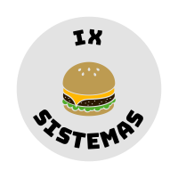

<ion-app>
  <ion-menu menuId="main-menu" contentId="main">
    <ion-content>
      <div class="menu-header-bg"></div>
      <div class="header-content">
        
        <ion-label>
          <h2>IX Sistemas</h2>
        </ion-label>
      </div>
      <ion-list class="menu-items" lines="none">
        <ion-menu-toggle>
          <ion-item routerLink="home">
            <ion-icon name="fast-food-outline" slot="start"></ion-icon>
            <ion-label>Cardápio</ion-label>
          </ion-item>
        </ion-menu-toggle>
        <ion-menu-toggle>
          <ion-item routerLink="pedidos">
            <ion-icon name="bag-check-outline" slot="start"></ion-icon>
            <ion-label>Pedidos</ion-label>
          </ion-item>
        </ion-menu-toggle>
      </ion-list>
    </ion-content>
  </ion-menu>
  <ion-router-outlet id="main"></ion-router-outlet>
</ion-app>
